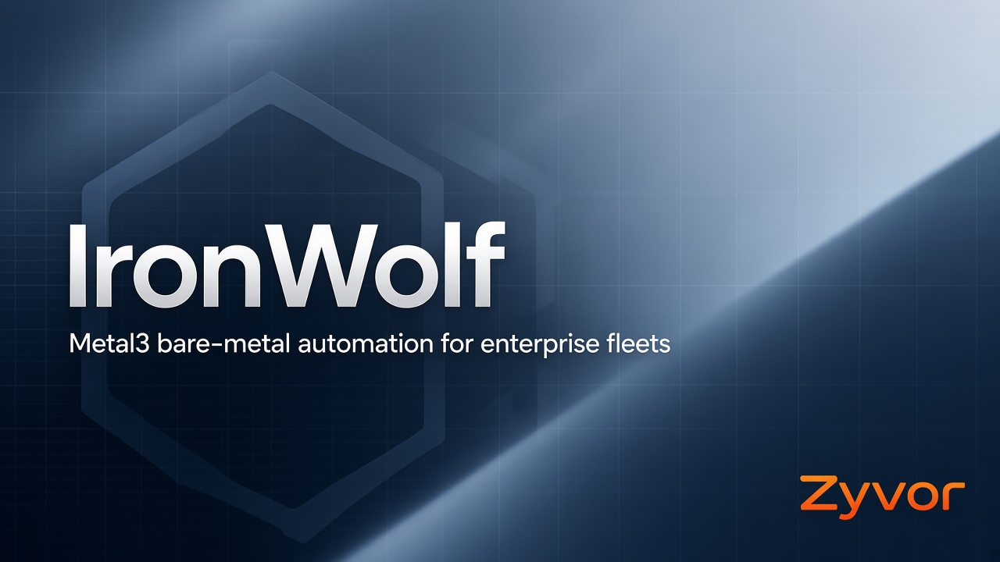

ClusterClaim + what-if
Schedule control planes and workers with binpack, spread, or topology-aware strategies — including dry-run capacity plans.
Zyvor · Bare metal Kubernetes
Metal3 bare-metal automation for enterprise fleets — claims, firmware, quarantine, approvals, and a product-ready Helm package.

Fleet operations
Operator CRDs on Metal3, a production dashboard, and packaging seeds so
helm install feels like a finished product.
Schedule control planes and workers with binpack, spread, or topology-aware strategies — including dry-run capacity plans.
Scored fleet grade, firmware compliance CSV, and host quarantine that blocks destructive mutations.
Two-person review with Slack notify, branding/notify seeds, starter AlertPolicy, and package readiness checks.
Quick start
Chain production values with the packaging overlay for branding, notify prefs, monitoring hooks, and a starter alert policy. Charts and images ship with your commercial package — this site is docs and product pages only.
helm upgrade --install ironwolf oci://ghcr.io/zyvorai/charts/ironwolf \
--namespace ironwolf-system --create-namespace \
-f values-production.yaml \
-f values-package.yaml \
--set dashboard.observability.grafanaUrl=http://HOST:30301
# Readiness checklist
curl -sS -H "X-API-Key: $IRONWOLF_API_KEY" \
https://dashboard/api/v1/package/readinessDocumentation
Guides live on this Pages site. Source code is private.